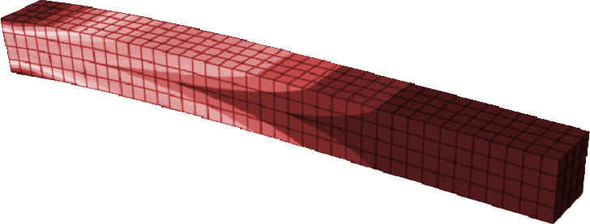
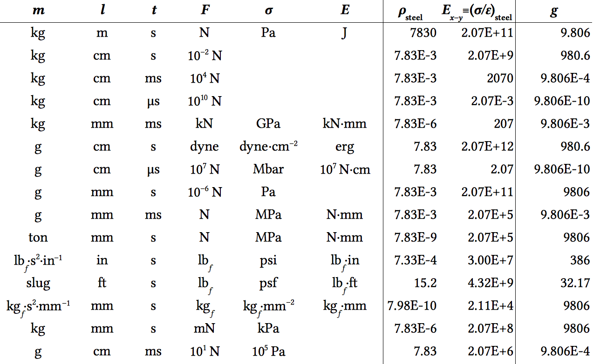

ME 498CF1/CA1/CA3 is a course designed to teach you the principles of computational mechanics tools—primarily ANSYS Fluent CFD and 3DS Simulia Abaqus FEA.

This course will provide an opportunity for students who have been introduced to principles of finite element analysis and computational fluid dynamics (by taking ME 412, ATMS 502, ME 554, etc.) to learn the basic and intermediate functionality of widely used commercial mechanics packages.
- CF1 • ANSYS Fluent CFD • Aug 23–Sep 22
- CA1 • 3DS Simulia Abaqus FEA • Oct 18–Nov 17
- CA3 • Projects • Sep 26–Oct 14, Nov 28–Dec 16
The course will be taught on Tuesdays and Thursdays in MEL 1001. It will consist of 1h20m applied lecture sections, with other lab hours available for consulting and exercise help. Applied lectures will introduce modeling methods and software capabilities as well as feature the hands-on demonstration of fundamental principles and techniques. Students will be expected to follow along and then apply the principles to short exercises and projects for each package. The CA3 section is available for students who wish to earn an extra credit hour by completing two in-depth projects during the semester.
Course Outline & Schedule
CF1 Fluent CFD Aug 23–Sep 22
Fluent docs »| Finite Volume Method |
| Preprocessing Composite Geometry |
| Convective Flow + Thermal Coupling |
| BCs |
| Transient Solution & Numerical Solution |
| Compressible External Flow |
| Verification and validation |
| Verification and validation |
| Turbulent Flow |
| Chemical Reactivity |
| Adaptive and Dynamic Meshing |
| Sample report |
| Fluent Homework #1 |
| Fluent Homework #2 (due Monday, Sep. 12) |
| Fluent Homework #3 (due Monday, Sep. 19) |
| Fluent Homework #4 (due Monday, Sep. 26) |
| All labs and homework are due for final grading on Tuesday, Sep. 27. |
CA3 CFD Project Sep 26–Oct 14
We'll meet on Thursday Sep 22 in the regular place to discuss the project.
CA1 Abaqus FEA Oct 18–Nov 17
Abaqus docs » Setting up Abaqus on EWS »| Finite Element Method |
| Meshing & Elements |
| Loading & Analysis |
| Coupling Physics |
| Material & Yield Models |
| Dynamic/Contact FEA |
| Transient Solution |
| Batch Programming/Scripting |
| Sample report |
| Abaqus Homework #1 (due Thursday, Nov. 3) |
Abaqus Homework #2 (due Monday, Nov. 7)
discbrake_std_cax4t.inp
discbrake_std_cax4t.f
discbrake_3d.inp
|
| All labs and homework are due for final grading on Tuesday, Nov. 29. |
CA3 FEA Project Nov 28–Dec 16
Resources
